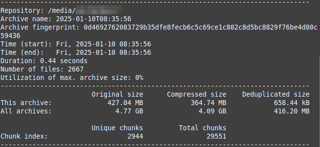

Borg simple guide for MacOS
This guide provides a simple, easy-to-follow directions for non-technical MacOS users to start using Borg Backup (considered by many to be the holy grail of backups) and avoid siftting through cluttered and confusing documentation.
It's interesting that the amount of information lay people need to benefit from complex apps, is actually not much. Borg's documentation is extensive, and most likely written by devs for for non-technical-users.
Create backup
This section is all you will need on a regular basis to create backups. It's only when you get yourself a new laptop will you need the other sections.
Note: Make backups periodically, in both pendrives, once a day or once a week, and definitely before you have to change your laptop.
- Open the terminal (Press CMD and Spacebar, and search for "terminal").
- Keep pressing the up arrow until you see the command below, and hit Enter. If you can't find the command, then copy the command below, and paste it in the terminal (press CMD and V).
borg create --stats --progress /Volumes/spb/sborgbackup::{now} ~/Documents/S - Enter your backup password, and hit Enter. Don't worry if you don't see anything in the terminal as you type the password. If you are on a new laptop, or making backups after a long time, the backup will take some time; but the second time around, it will be much faster. After the backup process is complete, you should see something like the image below.
Warning: Lose your password, and your backups are gone forever. Ensure you write it down carefully and store safely.
- Insert your second pendrive, and run the command in step 2 after editing the part which says
spbtossb(s secondary backup) in the terminal. Your mouse won't work, so you will have to use the arrow keys to navigate to that part of the command.
Create repo
The repo was already created for you, in both pendrives, so you won't need this section unless you lose a pendrive. You only need to create the repo once in your new pendrive, and then continue making backups as described above. To create a new repo, follow the steps below:
Note: Always keep backups in at least two pendrives.
- In you new pendrive, create a folder
spborssb, depending on which pendrive you are creating the folder. - Run the command (after changing the folder name to the one you created in step 1):
borg init --encryption=repokey /Volumes/spb/sborgbackup - Enter your password, twice.
- Press the letter
n.
Your repo should be created. And you can now continue as usual with making backups.
Install Borg
If you change your laptop, then you will have to install Borg Backup. And then also restore your backup (described below). To install borg on a new laptop, follow the steps below.
- Install Homebrew, by running the command in the terminal:
/bin/bash -c "$(curl -fsSL https://raw.githubusercontent.com/Homebrew/install/HEAD/install.sh)" - The Homebrew installation script will ask you to enter your Mac user password. This is the password you use to sign into your Mac. If you get stuck with the installation of Homebrew, https://mac.install.guide/homebrew/3
- Install Borg, by running this command:
brew install borgbackup
Borg should be installed. With Borg installed, you can proceed to restoring the backup (next section), and then continue as usual with making backups.
Restore backup
- In the terminal, run this command (copy and paste [CMD and V] the command in the terminal).
borg list /Volumes/spb/sborgbackup - This will bring up a list of all the backups you have made. Typically, you will only need the latest backup. It's only if the last backup is corrupted do the older backups become useful. Copy the lastest timestamp (CMD+C); it will look something like this
2024-05-09T19:15:31. - Run the following command (you're telling the terminal to go to this location, where the backup will be decrypted and extracted in the next step):
cd ~/Documents - Run the following command after deleting that timestamp and pasting the latest one (CMD and V) in the terminal:
borg extract --progress /Volumes/spb/sborgbackup::2024-05-09T19:15:31 - You should see in Documents a folder called Home; open it and the folders within until you see your S folder. Cut and paste your folder in Documents, and then delete the Home folder.
- To restore backup from the second pendrive, remember to change the path name in the command of step 4 to
/Volume/ssb/sborgbackup.
Learn more
https://borgbackup.readthedocs.io/en/stable/quickstart.html